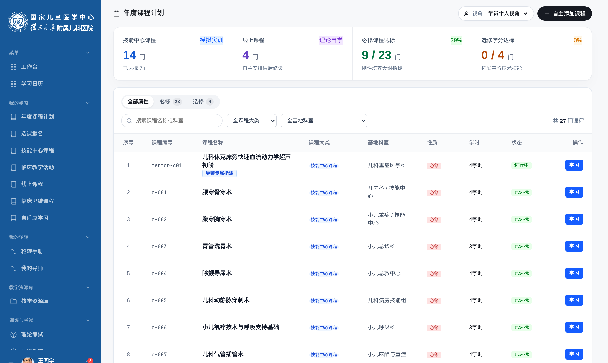
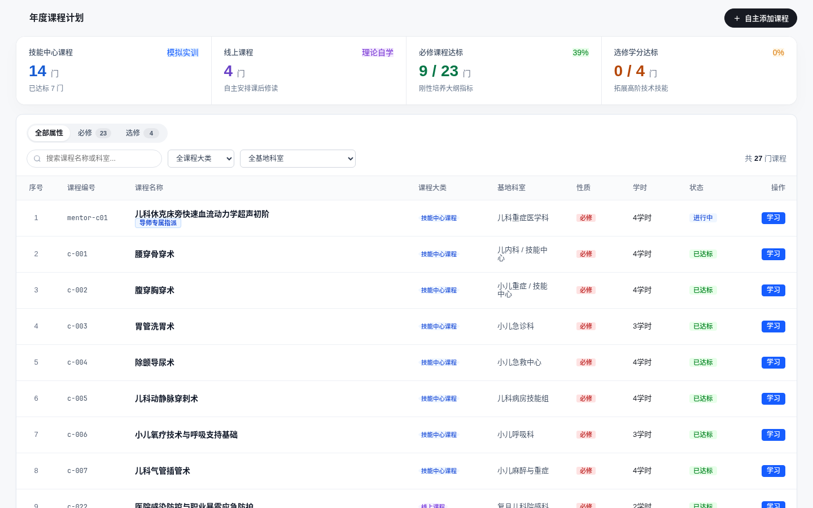
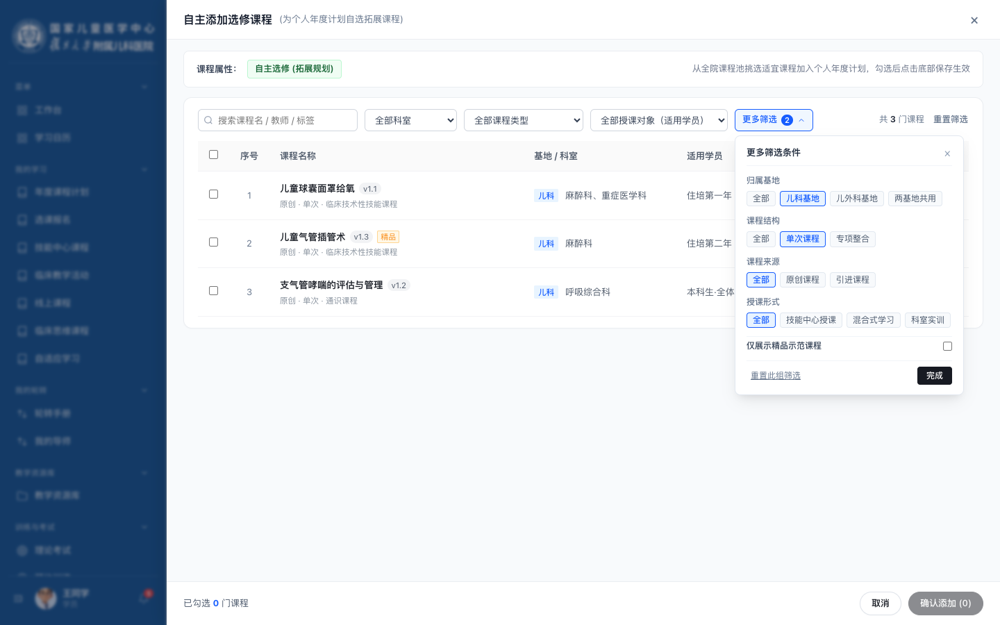
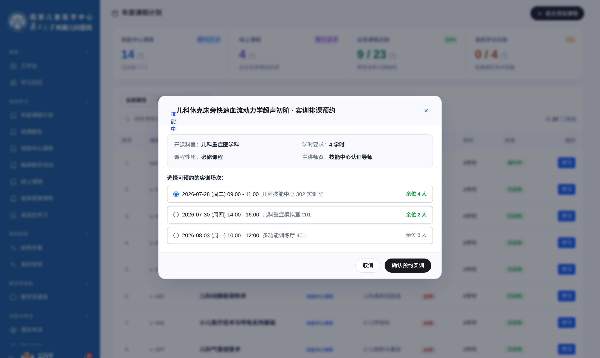
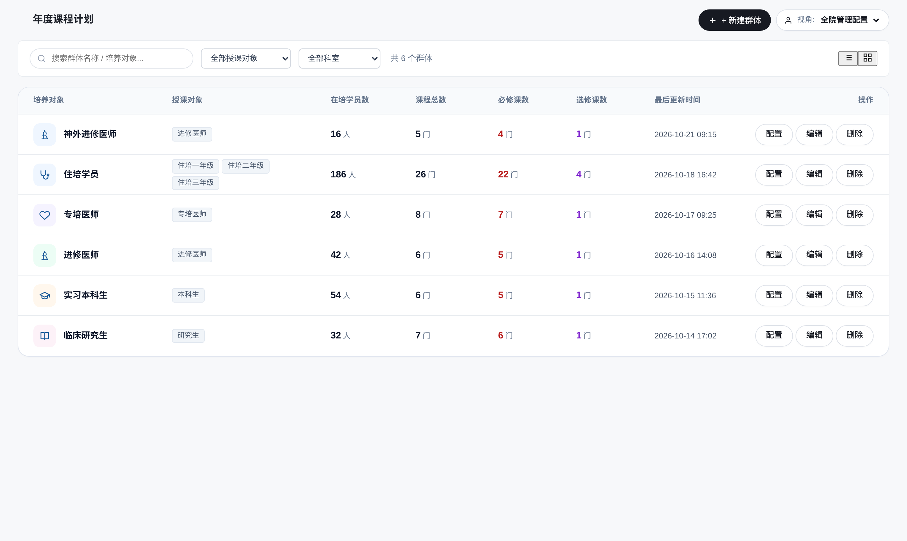
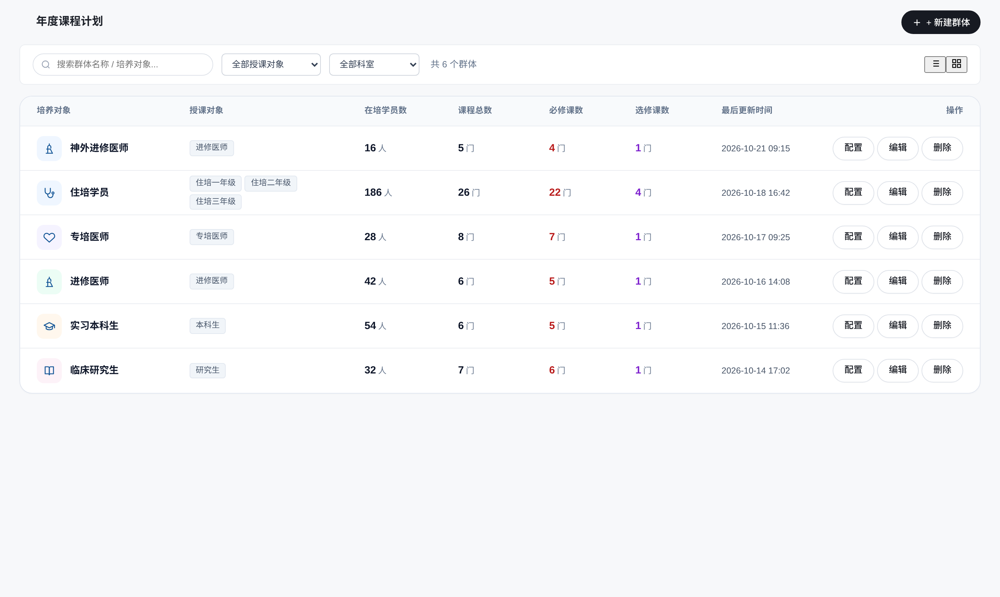
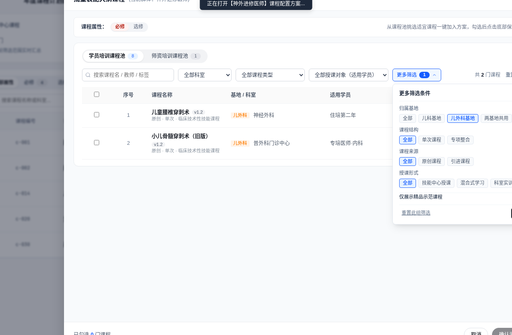

修改记录总清单（索引）
记录总数：5 项
改造核心：双端视角解耦（学员不看全院配置 / 管理员不看学员视角）
功能补齐：自主选修加课弹窗 + 点击「学习」联动真实系统学习平台
交互增强：批量装配课程弹窗「更多筛选」多维浮层与实时联动
| 序号 | 模块与改动主题（点击跳转） | 端别 | 定位 / 触发路径 | 涉及文件与留痕形式 |
|---|---|---|---|---|
| 01 | 学员端 · 年度课程计划移除全院管理配置下拉 | PC端 | 学员端 → 我的学习 → 年度课程计划 | pages/年度学习计划/page.js 等 · 截图对比（2 张） |
| 02 | 学员端 · 补齐「自主添加课程」与「学习」业务弹窗 | PC端 | 学员端 → 年度课程计划 → 自主添加课程 / 列表学习按钮 | pages/年度学习计划/page.js 等 · 截图对比（2 张） |
| 03 | 管理员端 · 移除学员个人视角切换胶囊 | PC端 | 管理员端 → 课程管理 → 课程工作台 / 年度课程计划 | pages/课程工作台/page.js 等 · 截图对比（2 张） |
| 04 | 批量装配课程弹窗 · 「更多筛选」支持交互展开与多维条件过滤 | PC端 | 管理端 → 年度课程计划 → 配置方案 → 批量加课 → 更多筛选 | pages/年度学习计划/page.js 等 · 截图对比（2 张） |
| 05 | 学员端 · 优化「学习」交互：直达真实课程详情，未选课智能提醒，取消无必要证书弹窗 | PC端 | 学员端 → 我的学习 → 年度课程计划 → 列表「学习」按钮 | pages/年度学习计划/page.js 等 · 截图对比（2 张） |
01. 学员端 · 年度课程计划移除全院管理配置下拉
修改前 存在问题
- 越权漏洞：顶部工具栏渲染了「视角：全院管理配置 / 学员个人视角」下拉选择胶囊。
- 角色混淆：学员可以随意点击切换到「全院管理配置」，甚至查看到全院大纲配置、下发群体与批量加课等管理员专属功能，权限边界失控。

修改后 改造落地
- 移除下拉胶囊：在学员端界面彻底剔除视角切换下拉按钮（
.alp-perspective-pill），仅展示学员个人计划视角。 - 权限硬拦截：控制器方法
setPerspective增加role === 'admin'权限守卫，阻止任何非管理员角色通过方法调用越权切换。

02. 学员端 · 补齐「自主添加课程」与「学习」业务弹窗
修改前 存在问题
- 功能静默阻断：点击顶部「自主添加课程」按钮无任何反应；点击课程列表行操作列「学习」按钮同样无任何弹窗展开。
- 模板缺失：底层代码中声明了
studentAddCourseModalVisible与多套学习状态，但 HTML 模板中完全遗漏了弹窗 DOM 结构，导致交互链路断裂。
修改前：点击按钮无任何弹窗响应
（底层有状态变更但无弹窗 UI 容器）
修改后 改造落地
- 复用标准课程池装配抽屉：拒绝另起炉灶与样式割裂，直接复用成熟的「课程池装配大抽屉（弹窗 B）」，自适应切换为「自主添加选修课程」模式；内置 37 门全量课程池，且包含「更多筛选」交互气泡（归属基地/课程结构/来源/授课形式/精品课）多维联动筛选能力。
- 分类学习弹窗：点击「学习」根据课程属性弹出对应模态窗（线上微课理论修读、虚拟病例临床思维推演、自适应学习弱项攻关、技能实训预约排课、达标成绩与证书）。


03. 管理员端 · 移除学员个人视角切换胶囊
修改前 存在问题
- 管理端混入学员视角：管理员端顶部保留「视角：全院管理配置 / 学员个人视角」下拉选择控件。
- 定位不纯粹：管理员应该专注全院方案配置、学习群体设定与课程指派，混入个人视角造成操作干扰。

修改后 改造落地
- 彻底移除视角下拉：管理员端工具栏移除了视角下拉胶囊与
cw4-perspective-control控件，界面干净清爽。 - 双端完全解耦：管理员端专心进行全院 3 个重点群体与各阶段培养方案下发；学员端专心完成个人自主选修规划与学时达成。

04. 批量装配课程弹窗 · 「更多筛选」支持交互展开与多维条件过滤
修改前 存在问题
- 按钮静态假死：批量装配课程抽屉顶部工具栏的「更多筛选」为无事件绑定的静态普通按钮，点击无任何响应与面板展开。
- 筛选维度欠缺：仅有科室、课程类型、适用学员等基础筛选，缺少按「归属基地」、「课程结构」、「课程来源」、「授课形式」、「精品课程」等进阶维度的快速筛选能力。

修改后 改造落地
- 气泡浮层与动画指示：点击展开专业的气泡下拉弹层（Popover），右侧箭头随展开状态旋转，并提供单独的关闭与完成动作。
- 5大深层筛选维度：平铺式标签选择「归属基地（儿科/儿外科/两基地共用）」、「课程结构（单次/专项）」、「课程来源（原创/引进）」、「授课形式」及「仅展示精品示范课程」勾选项。
- 动态角标与实时联动：条件生效时按钮高亮并显示数字角标（如
更多筛选 1），候选课程大表实时联动计算；支持浮层内单独「重置此组筛选」和外层全局「重置筛选」。

05. 学员端 · 优化「学习」交互：直达真实课程详情，未选课智能提醒，取消无必要证书弹窗
修改前 存在问题
- 已达标课程弹出多余证书：之前点击已达标课程会弹出「课程学分达成证明」证书模态框，无法直接复习课程详情与章节课件，缺乏实用价值。
- 未选课缺乏智能引导：未选修的待开始课程缺少明确的选课拦截与确认交互，直接跳转或原地提示容易让学员感到突兀。
- 表格状态徽标单一：状态列硬编码为已达标样式，未能按已达标、进行中、待开始呈现清晰的三态色彩体系。

修改后 改造落地
- 未选课拦截弹窗提醒：对于尚未选修（状态为「
待开始」）的课程，点击「学习」弹出友好模态框：“您尚未选修《XXX》，暂无学习记录。是否跳转到选课界面进行选课？”，提供[取消]与[前往选课]按钮，点击确认后平滑引导至选课中心。 - 直达真实课程详情：针对已选课的课程（无论进行中还是已达标），彻底取消冗余证书弹窗，通过会话标记与路由直达对应模块的真实「课程详情」（线下技能实训课进入技能中心课程详情抽屉，线上课程进入在线学习播放器与课件详情）。
- 状态徽标三态色彩标准化：状态列动态绑定样式：已达标呈现绿色
is-done、进行中呈现蓝色is-doing、待开始呈现灰色is-todo，进度一目了然。